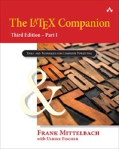
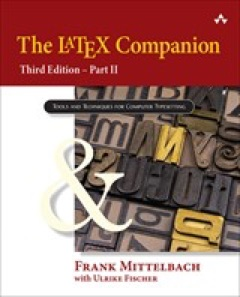
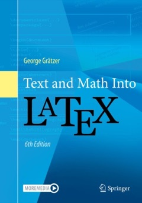
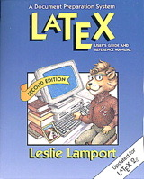

Topics & Workshops
หัวข้อการเรียนและปฏิบัติการ
แต่ละหัวข้อมีสไลด์บรรยายและเอกสารประกอบการสอน งานปฏิบัติการแต่ละชุดมีหน้าคำแนะนำของตัวเอง พร้อมไฟล์ตั้งต้นและชิ้นงานต้นแบบ แท็บหัวข้อพิเศษรวบรวมหัวข้อที่ต่อยอดจากเนื้อหาหลักของรายวิชา
หัวข้อหลัก
-
01
Introduction to LaTeX
ประวัติและพัฒนาการของ TeX และ LaTeX เทกซ์เอ็นจิ้นและลาเทกซ์เอ็นจิ้น โครงสร้างพื้นฐานของเอกสาร และหลักการจัดเตรียมเอกสารด้วย LaTeX
ปฏิบัติการ
01ติดตั้ง LaTeX และเครื่องมือ -
02
Formatting Text
การเรียงพิมพ์ข้อความ กลไกการเรียงพิมพ์ การใช้คำสั่ง (commands) และสิ่งแวดล้อม (environments) ของ LaTeX และการจัดรูปแบบตัวอักษร
ปฏิบัติการ
02การจัดรูปแบบข้อความ -
03
Document Structure
คลาสเอกสาร การแบ่งส่วน บท และหัวข้อ สารบัญ และโครงสร้างของเอกสารประเภทบทความ รายงาน และหนังสือ
-
04
Figures and Tables
การเรียงพิมพ์รายการและตาราง การประสานรูปภาพและสี การจัดการเนื้อหาแบบลอยตัว (floating bodies) และกราฟิกแบบเวกเตอร์ในงานคณิตศาสตร์
-
05
Mathematics
การเรียงพิมพ์นิพจน์และสมการทางคณิตศาสตร์ สัญกรณ์ทางคณิตศาสตร์ (mathematical symbols) เมทริกซ์ และการอ้างอิงสมการ
-
06
Theorems and Proofs
การนิยามและเรียงพิมพ์บทนิยาม ทฤษฎีบท บทแทรก และการพิสูจน์ ตัวอย่างการเรียงพิมพ์งานทางคณิตศาสตร์ที่น่าสนใจ
ปฏิบัติการ
09ทฤษฎีบทและการพิสูจน์ -
07
Citations and Bibliography
การจัดการเอกสารอ้างอิง การทำบรรณานุกรมและรายการดัชนี ข้อสำคัญและข้อควรระวังในการจัดเอกสาร
ปฏิบัติการ
10การอ้างอิงและบรรณานุกรม -
08
ปฏิบัติการ
11สร้างสไลด์นำเสนอด้วย Beamer -
09
Thai, Macros and Large Documents
การเรียงพิมพ์เอกสารภาษาไทย การนิยามคำสั่งและสิ่งแวดล้อมขึ้นใช้เอง การเรียกใช้แพ็กเกจเพิ่มเติม และการจัดการเอกสารขนาดใหญ่
ปฏิบัติการ
12เอกสารภาษาไทยและคำสั่งที่สร้างเอง -
10
Typesetting with AI Assistance
การใช้แชตบอต AI ช่วยร่างและแก้ไขเอกสาร LaTeX การเขียนพรอมต์ จุดผิดที่พบบ่อยในคำตอบของ AI การตรวจสอบด้วยการคอมไพล์ และการใช้ AI อย่างโปร่งใสและปลอดภัย
หัวข้อพิเศษ
-
S1
Exam Papers
การจัดทำข้อสอบด้วยคลาส exam คำถาม คะแนน ช่องเว้นคำตอบ และการพิมพ์ฉบับเฉลย
สไลด์เร็ว ๆ นี้
ปฏิบัติการ
15สร้างข้อสอบด้วยคลาส exam -
S2
Moodle Quizzes
การเขียนคำถามสำหรับระบบ Moodle ด้วยแพ็กเกจ moodle และการส่งออกเป็นไฟล์ XML เพื่อนำเข้าคลังข้อสอบ
สไลด์เร็ว ๆ นี้
ปฏิบัติการ
16สร้างคำถาม Moodle ด้วยแพ็กเกจ moodle
โครงงาน
โครงงานเดี่ยว คิดเป็น 25% ของคะแนนรวม นักศึกษาเลือกหัวข้อเอง เขียนเป็นภาษาไทยหรือภาษาอังกฤษ จัดทำเอกสารฉบับสมบูรณ์ สไลด์ beamer จากเอกสารนั้น และนำเสนอในชั้นเรียน
- เอกสาร (article หรือ report 6–10 หน้า)15
- สไลด์ beamer5
- การนำเสนอ 5 นาที ตอบคำถาม 3 นาที5
กำหนดการ
- 1ก.พ.แจ้งหัวข้อ
แจ้งหัวข้อและชื่อเรื่องกับผู้สอนในชั้นเรียน - 26ก.พ.ส่งงาน
ไฟล์ zip ภายในเวลา 23.59 น. - 1มี.ค.นำเสนอ
นำเสนอในชั้นเรียน คนละ 8 นาที
Course info
ข้อมูลรายวิชา
กำหนดการในชั้นเรียน
เรียนทฤษฎีและปฏิบัติการที่ห้อง ST1905 คณะวิทยาศาสตร์และเทคโนโลยี หรือเรียนออนไลน์ผ่านระบบ MS-Teams หรือเป็นไปตามประกาศของมหาวิทยาลัย
| Section | วัน | บรรยาย | ปฏิบัติการ | MS-Teams |
|---|---|---|---|---|
| SEC 01 AM68111 | จันทร์ | 13.00–15.00 | 15.00–17.00 | TBA |
การสอบ
- 25ม.ค.สอบกลางภาค
25 มกราคม 2570 เวลา 13.00–16.00 - 15มี.ค.สอบปลายภาค
15 มีนาคม 2570 เวลา 13.00–16.00
ผลลัพธ์การเรียนรู้ระดับรายวิชา
เมื่อจบรายวิชานี้ นักศึกษาจะสามารถ
- CLO1ติดตั้งและคอมไพล์
ติดตั้งระบบ LaTeX โปรแกรมแก้ไขข้อความ และโปรแกรมอ่าน PDF แล้วคอมไพล์เอกสารผ่านเทอร์มินัล โดยเลือกใช้
pdflatexxelatexbiberและlatexmkได้ถูกต้องตามลักษณะของเอกสาร พร้อมอธิบายหน้าที่ของไฟล์ที่เกิดจากการคอมไพล์ และเปรียบเทียบ LaTeX กับโปรแกรมประมวลผลคำได้ - CLO2โครงสร้างและรูปแบบเอกสาร
สร้างเอกสารที่มีโครงสร้างสมบูรณ์ โดยเลือกคลาส
articlereportหรือbookให้เหมาะกับงาน แบ่งบทและหัวข้อ สร้างหัวเรื่อง บทคัดย่อ สารบัญ เชิงอรรถ ภาคผนวก และรายการ ตลอดจนจัดรูปแบบข้อความ ย่อหน้า และแบบอักษรได้ - CLO3รูปภาพ สี และตาราง
แทรกรูปภาพ ใช้สี และสร้างตาราง ในรูปแบบลอยตัวที่มีคำบรรยาย พร้อมอ้างอิงข้ามด้วย
\labelและ\refและสร้างรายการรูปภาพและรายการตารางได้ - CLO4คณิตศาสตร์
เรียงพิมพ์คณิตศาสตร์ ทั้งนิพจน์ในบรรทัด สมการแยกบรรทัด สมการที่มีหมายเลข สมการหลายบรรทัด เมทริกซ์ และฟังก์ชันแบ่งกรณี และอ่านคำสั่งคณิตศาสตร์แล้วระบุผลลัพธ์ที่จะได้
- CLO5ทฤษฎีบทและบทพิสูจน์
เขียนนิยาม ทฤษฎีบท บทแทรก และบทพิสูจน์ ด้วยแพ็กเกจ
amsthmโดยกำหนดการนับเลขและรูปแบบของสภาพแวดล้อมให้เหมาะกับเอกสารได้ - CLO6การอ้างอิงและบรรณานุกรม
จัดทำรายการอ้างอิงด้วยไฟล์
.bibสำหรับแหล่งข้อมูลประเภทต่าง ๆ อ้างอิงในเนื้อหาด้วยbiblatexและbiberและเปลี่ยนรูปแบบการอ้างอิงได้โดยไม่แก้เนื้อหา - CLO7สื่อนำเสนอด้วย Beamer
สร้างสื่อนำเสนอด้วยคลาส
beamerที่มีหน้าชื่อเรื่อง สารบัญ และหัวข้อ ใช้การแสดงผลทีละส่วน การจัดสองคอลัมน์ กล่องเน้นเนื้อหา และธีมได้ - CLO8เอกสารภาษาไทย
จัดทำเอกสารภาษาไทยด้วยแพ็กเกจ
thaispecและคอมไพล์ด้วย XeLaTeX พร้อมเลือกฟอนต์ภาษาไทยที่เหมาะสมได้ - CLO9คำสั่งและสภาพแวดล้อมที่สร้างเอง
สร้างคำสั่งและสภาพแวดล้อมใหม่ด้วย
\newcommand\renewcommandและ\newenvironmentและแบ่งเอกสารเป็นหลายไฟล์ด้วย\inputและ\includeได้ - CLO10การวิเคราะห์และแก้ข้อผิดพลาด
วิเคราะห์ข้อความผิดพลาดและคำเตือนจากเทอร์มินัลและไฟล์
.logระบุตำแหน่งข้อผิดพลาดในไฟล์.texที่กำหนดให้ และแก้ไขให้คอมไพล์ได้ผลตามต้องการ - CLO11โครงงาน
วางแผนและจัดทำเอกสารฉบับสมบูรณ์ตั้งแต่เริ่มต้นในหัวข้อที่เลือก โดยบูรณาการโครงสร้างเอกสาร รูปภาพ ตาราง คณิตศาสตร์ และบรรณานุกรม จัดทำสื่อนำเสนอด้วย beamer จากเอกสารนั้น และนำเสนอผลงานด้วยวาจาได้
การวัดผลการเรียน
คะแนนเต็ม 100 คะแนน แบ่งออกเป็น
- การสอบกลางภาค25%
- การสอบปลายภาค25%
- งานที่ได้รับมอบหมาย25%
- โครงงาน25%
หากนักศึกษาเข้าเรียนน้อยกว่า 80% ของเวลาเรียนทั้งหมด หรือได้คะแนนรวมน้อยกว่า 50% ของคะแนนเต็ม จะไม่ผ่านในรายวิชานี้ และได้รับผลการเรียน F (เกรด 0.00)
นักศึกษาที่ผ่านเกณฑ์ดังกล่าว จะได้รับผลการเรียนตามเกณฑ์ของคะแนน t-score
เมื่อ x คือคะแนนรวม μ คือคะแนนเฉลี่ยของคะแนนรวม และ σ คือส่วนเบี่ยงเบนมาตรฐานของคะแนนรวม
| ผลการเรียน | เกรด | เกณฑ์ t-score |
|---|---|---|
| A | 4.00 | t ≥ 80 |
| B+ | 3.50 | 75 ≤ t < 80 |
| B | 3.00 | 70 ≤ t < 75 |
| C+ | 2.50 | 65 ≤ t < 70 |
| C | 2.00 | 60 ≤ t < 65 |
| D+ | 1.50 | 55 ≤ t < 60 |
| D | 1.00 | 50 ≤ t < 55 |
| F | 0.00 | t < 50 |
เอกสารอ้างอิง
-

จำหน่ายThe LaTeX Companion, Part I
โครงสร้างเอกสาร การจัดรูปแบบข้อความ การจัดหน้า ตาราง เนื้อหาลอยตัว กราฟิก และแบบอักษร
Mittelbach, F., & Fischer, U. (2025). The LaTeX companion: Part I (3rd ed.). Addison-Wesley.
F. Mittelbach and U. Fischer, The LaTeX Companion, Part I, 3rd ed. Boston, MA, USA: Addison-Wesley, 2025.
Mittelbach, Frank, and Ulrike Fischer. The LaTeX Companion, Part I. 3rd ed. Boston: Addison-Wesley, 2025.
@book{mittelbach2025companion1, author = {Frank Mittelbach and Ulrike Fischer}, title = {The {\LaTeX} Companion, Part {I}}, edition = {3}, publisher = {Addison-Wesley}, address = {Boston, MA}, year = {2025}, isbn = {978-0-13-546733-6} } -

จำหน่ายThe LaTeX Companion, Part II
แบบอักษรและสัญลักษณ์ คณิตศาสตร์ขั้นสูง ดัชนี บรรณานุกรม การอ้างอิง และการแก้ปัญหา
Mittelbach, F., & Fischer, U. (2025). The LaTeX companion: Part II (3rd ed.). Addison-Wesley.
F. Mittelbach and U. Fischer, The LaTeX Companion, Part II, 3rd ed. Boston, MA, USA: Addison-Wesley, 2025.
Mittelbach, Frank, and Ulrike Fischer. The LaTeX Companion, Part II. 3rd ed. Boston: Addison-Wesley, 2025.
@book{mittelbach2025companion2, author = {Frank Mittelbach and Ulrike Fischer}, title = {The {\LaTeX} Companion, Part {II}}, edition = {3}, publisher = {Addison-Wesley}, address = {Boston, MA}, year = {2025}, isbn = {978-0-13-548022-9} } -

จำหน่ายText and Math Into LaTeX
เน้นการเรียงพิมพ์คณิตศาสตร์และเอกสารวิชาการ เหมาะกับงานด้านวิทยาศาสตร์
Grätzer, G. (2024). Text and math into LaTeX (6th ed.). Springer. https://doi.org/10.1007/978-3-031-55281-6
G. Grätzer, Text and Math Into LaTeX, 6th ed. Cham, Switzerland: Springer, 2024, doi: 10.1007/978-3-031-55281-6.
Grätzer, George. Text and Math Into LaTeX. 6th ed. Cham: Springer, 2024. https://doi.org/10.1007/978-3-031-55281-6.
@book{gratzer2024text, author = {George Gr{\"a}tzer}, title = {Text and Math Into {\LaTeX}}, edition = {6}, publisher = {Springer}, address = {Cham}, year = {2024}, isbn = {978-3-031-55280-9}, doi = {10.1007/978-3-031-55281-6} } -

จำหน่ายLaTeX: A Document Preparation System
คู่มือต้นฉบับจากผู้สร้าง LaTeX อธิบายคำสั่งพื้นฐานอย่างเป็นระบบ
Lamport, L. (1994). LaTeX: A document preparation system: User’s guide and reference manual (2nd ed.). Addison-Wesley.
L. Lamport, LaTeX: A Document Preparation System: User’s Guide and Reference Manual, 2nd ed. Reading, MA, USA: Addison-Wesley, 1994.
Lamport, Leslie. LaTeX: A Document Preparation System: User’s Guide and Reference Manual. 2nd ed. Reading, MA: Addison-Wesley, 1994.
@book{lamport1994latex, author = {Leslie Lamport}, title = {{\LaTeX}: A Document Preparation System}, subtitle = {User's Guide and Reference Manual}, edition = {2}, publisher = {Addison-Wesley}, address = {Reading, MA}, year = {1994}, isbn = {978-0-201-52983-8} } -
ฟรี
The Not So Short Introduction to LaTeX
เอกสารแนะนำ LaTeX ฉบับย่อ อ่านได้ฟรี เหมาะสำหรับผู้เริ่มต้น
Oetiker, T., Partl, H., Hyna, I., & Schlegl, E. (2021). The not so short introduction to LaTeX (Version 6.4). CTAN. https://ctan.org/pkg/lshort-english
T. Oetiker, H. Partl, I. Hyna, and E. Schlegl, “The not so short introduction to LaTeX,” version 6.4, CTAN, 2021. [Online]. Available: https://ctan.org/pkg/lshort-english
Oetiker, Tobias, Hubert Partl, Irene Hyna, and Elisabeth Schlegl. The Not So Short Introduction to LaTeX. Version 6.4. CTAN, 2021. https://ctan.org/pkg/lshort-english.
@manual{oetiker2021lshort, author = {Tobias Oetiker and Hubert Partl and Irene Hyna and Elisabeth Schlegl}, title = {The Not So Short Introduction to {\LaTeX}}, version = {6.4}, organization = {CTAN}, date = {2021-03-09}, url = {https://ctan.org/pkg/lshort-english} }